Week 10 - Notes: Modeling Chaotic Systems#
Duffing Oscillator#
The Duffing oscillator is a non-linear second-order differential equation that describes the motion of a damped and driven oscillator with a non-linear restoring force. It is given by:
\[\frac{d^2x}{dt^2} + \delta \frac{dx}{dt} + \alpha x + \beta x^3 = \gamma \cos(\omega t)\]
import numpy as np
import matplotlib.pyplot as plt
from matplotlib import gridspec
from scipy.integrate import solve_ivp
plt.style.use('seaborn-v0_8-colorblind')
def duffing(t, y, delta, alpha, beta, gamma, omega):
x, v = y
dxdt = v
dvdt = -delta*v - alpha*x - beta*x**3 + gamma*np.cos(omega*t)
return [dxdt, dvdt]
# Parameters
delta = 0.3
alpha = -1.0
beta = 1.0
gamma = 0.2
omega = 1.2
# Time span and initial conditions
cycles = 40
tfinal = 2 * np.pi * cycles / omega
t_span = (0, tfinal)
t_eval = np.linspace(t_span[0], t_span[1], 10000)
y0 = [1.0, 0.0]
# Solve the differential equations
sol = solve_ivp(duffing, t_span, y0, args=(delta, alpha, beta, gamma, omega), t_eval=t_eval)
x = sol.y[0]
v = sol.y[1]
t = sol.t
plt.figure(figsize=(16, 4))
gs = gridspec.GridSpec(1, 2, width_ratios=[3, 1])
T = 2 * np.pi / omega
# Time series plot
ax0 = plt.subplot(gs[0])
ax0.plot(t, x)
ax0.set_xticks(xticks, [f'{int(i/T)}' for i in xticks])
ax0.scatter(t[0],x[0], color='C1', marker='o', label='Start', s=50)
ax0.scatter(t[-1],x[-1], color='C2', marker='s', label='End', s=50)
ax0.set_title('Time Series')
ax0.set_xlabel('Time (Cycles)')
ax0.set_ylabel('x(t)')
ax0.grid(True)
ax0.legend()
# Phase space plot
ax1 = plt.subplot(gs[1])
ax1.plot(x, v, color='C0')
plt.scatter(x[0], v[0], color='C1', marker='o', label='Start', s=50)
plt.scatter(x[-1], v[-1], color='C2', marker='s', label='End', s=50)
ax1.set_title('Phase Space')
ax1.set_xlabel('x')
ax1.set_ylabel('v')
ax1.grid(True)
ax1.legend()
plt.tight_layout()
---------------------------------------------------------------------------
NameError Traceback (most recent call last)
Cell In[3], line 9
7 ax0 = plt.subplot(gs[0])
8 ax0.plot(t, x)
----> 9 ax0.set_xticks(xticks, [f'{int(i/T)}' for i in xticks])
10 ax0.scatter(t[0],x[0], color='C1', marker='o', label='Start', s=50)
11 ax0.scatter(t[-1],x[-1], color='C2', marker='s', label='End', s=50)
NameError: name 'xticks' is not defined
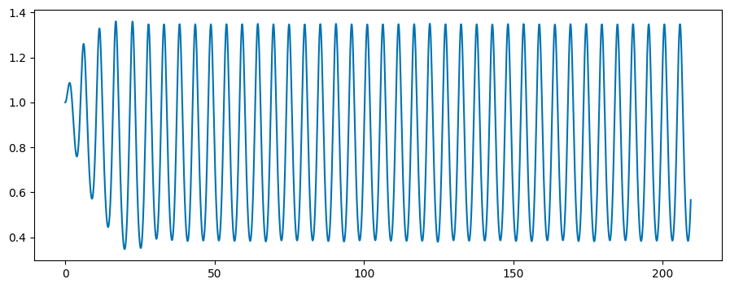
# Plotting
plt.figure(figsize=(12, 6))
plt.subplot(2, 1, 1)
plt.plot(t, x, label='x(t)')
#xticks should be integer values of T, but only ever Nth tick should be labeled
T = 2 * np.pi / omega
xticks = np.arange(0, tfinal + T, T)
plt.xticks(xticks, [f'{int(i/T)}' for i in xticks])
plt.scatter(t[0],x[0], color='green', marker='o', label='Start', s=50)
plt.scatter(t[-1],x[-1], color='r', marker='s', label='End', s=50)
plt.title('Time Series of the Duffing Oscillator')
plt.xlabel('Time (Cycles)')
plt.ylabel('Amplitude')
plt.grid()
# Plot phase space
plt.figure(figsize=(8, 8))
plt.plot(x, v)
plt.scatter(x[0], v[0], color='green', marker='o', label='Start', s=50)
plt.scatter(x[-1], v[-1], color='r', marker='s', label='End', s=50)
plt.title('Phase Space of the Duffing Oscillator')
plt.xlabel('x')
plt.ylabel('v')
plt.legend()
plt.grid()
plt.tight_layout()
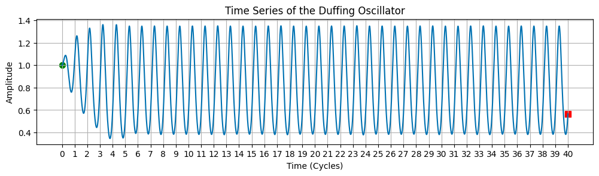
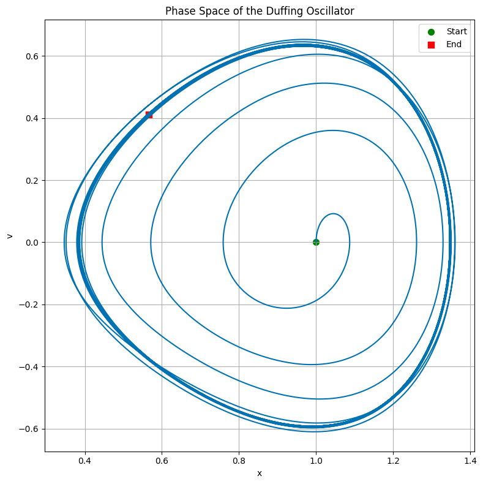
def duffing(t, y, delta, alpha, beta, gamma, omega):
x, v = y
dxdt = v
dvdt = -delta*v - alpha*x - beta*x**3 + gamma*np.cos(omega*t)
return [dxdt, dvdt]
def solve_duffing(delta, alpha, beta, gamma, omega, cycles=40, y0=[1.0, 0.0], num_points=100000):
# Time span and initial conditions
tfinal = 2 * np.pi * cycles / omega
t_span = (0, tfinal)
t_eval = np.linspace(t_span[0], t_span[1], num_points)
# Solve the differential equations
sol = solve_ivp(duffing, t_span, y0, args=(delta, alpha, beta, gamma, omega), t_eval=t_eval)
x = sol.y[0]
v = sol.y[1]
t = sol.t
return x, v, t
def plot_duffing(t, x, v, T):
plt.figure(figsize=(16, 4))
gs = gridspec.GridSpec(1, 2, width_ratios=[3, 1])
# extract position and velocity data at intervals of T
indices_at_T = np.arange(0, len(t), int(T / (t[1] - t[0])))
xatT = x[indices_at_T]
vatT = v[indices_at_T]
t_atT = t[indices_at_T]
## Before plotting, remove the first half of all the data
x = x[int(len(x)/2):]
v = v[int(len(v)/2):]
t = t[int(len(t)/2):]
xatT = xatT[int(len(xatT)/2):]
vatT = vatT[int(len(vatT)/2):]
t_atT = t_atT[int(len(t_atT)/2):]
ax0 = plt.subplot(gs[0])
ax0.plot(t, x)
xticks = np.arange(0, t[-1] + T, T)
ax0.set_xticks(xticks, [f'{int(i/T)}' for i in xticks])
ax0.scatter(t[0], x[0], color='C1', marker='o', label='Start', s=50)
ax0.scatter(t[-1], x[-1], color='C2', marker='s', label='End', s=50)
ax0.scatter(t_atT, xatT, color='C3', marker='x', s=50)
ax0.set_title('Time Series')
ax0.set_xlabel('Time (Cycles)')
ax0.set_ylabel('x(t)')
ax0.grid(True)
ax0.legend()
# Phase space plot
ax1 = plt.subplot(gs[1])
ax1.plot(x, v, color='C0')
ax1.scatter(x[0], v[0], color='C1', marker='o', label='Start', s=50)
ax1.scatter(x[-1], v[-1], color='C2', marker='s', label='End', s=50)
ax1.scatter(xatT, vatT, color='C3', marker='x', s=50)
ax1.set_title('Phase Space')
ax1.set_xlabel('x')
ax1.set_ylabel('v')
ax1.grid(True)
ax1.legend()
plt.tight_layout()
delta = 0.3
alpha = -1.0
beta = 1.0
gamma = 0.2
omega = 1.2
T = 2 * np.pi / omega
x, v, t = solve_duffing(delta, alpha, beta, gamma, omega)
plot_duffing(t, x, v, T)
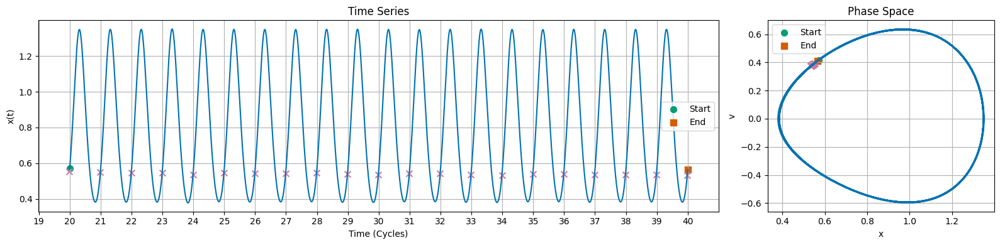
delta = 0.3
alpha = -1.0
beta = 1.0
gamma = 0.28
omega = 1.2
T = 2 * np.pi / omega
x, v, t = solve_duffing(delta, alpha, beta, gamma, omega)
plot_duffing(t, x, v, T)
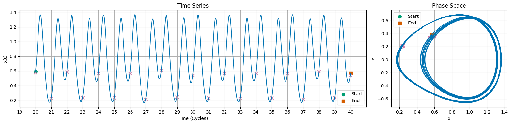
delta = 0.3
alpha = -1.0
beta = 1.0
gamma = 0.29
omega = 1.2
T = 2 * np.pi / omega
x, v, t = solve_duffing(delta, alpha, beta, gamma, omega)
plot_duffing(t, x, v, T)
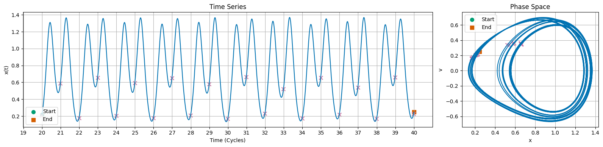
delta = 0.3
alpha = -1.0
beta = 1.0
gamma = 0.37
omega = 1.2
T = 2 * np.pi / omega
x, v, t = solve_duffing(delta, alpha, beta, gamma, omega)
plot_duffing(t, x, v, T)
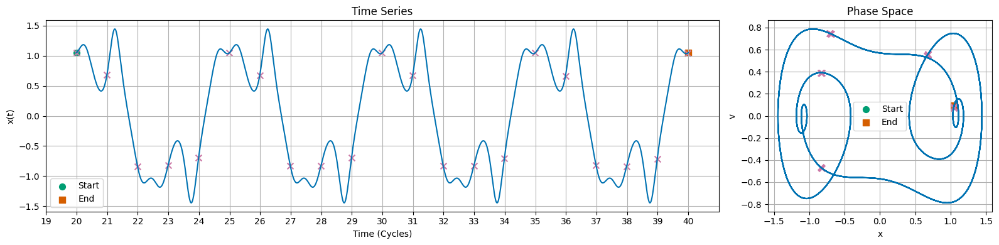
delta = 0.3
alpha = -1.0
beta = 1.0
gamma = 0.50
omega = 1.2
T = 2 * np.pi / omega
x, v, t = solve_duffing(delta, alpha, beta, gamma, omega, cycles=70)
plot_duffing(t, x, v, T)
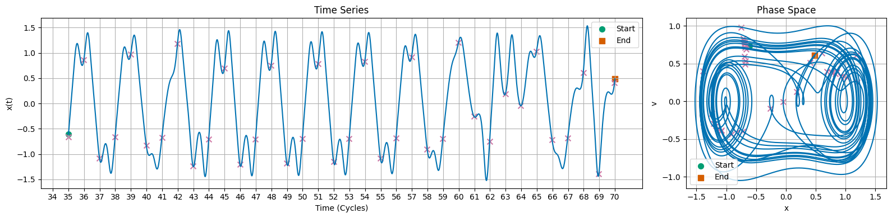
delta = 0.3
alpha = -1.0
beta = 1.0
gamma = 0.68
omega = 1.2
T = 2 * np.pi / omega
x, v, t = solve_duffing(delta, alpha, beta, gamma, omega)
plot_duffing(t, x, v, T)
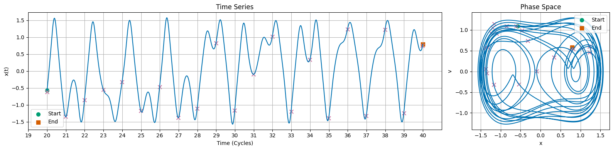
delta = 0.3
alpha = -1.0
beta = 1.0
gamma = 0.74
omega = 1.2
T = 2 * np.pi / omega
x, v, t = solve_duffing(delta, alpha, beta, gamma, omega)
plot_duffing(t, x, v, T)
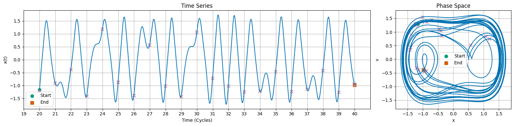
delta = 0.3
alpha = -1.0
beta = 1.0
gamma = 0.75
omega = 1.2
T = 2 * np.pi / omega
x, v, t = solve_duffing(delta, alpha, beta, gamma, omega)
plot_duffing(t, x, v, T)
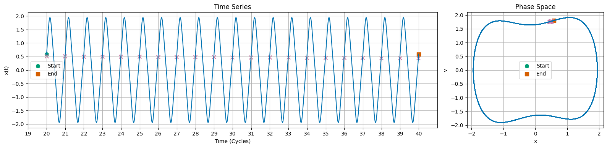
Lorenz Attractor#
The Lorenz attractor is a system of ordinary differential equations that model atmospheric convection. It is given by:
\[\frac{dx}{dt} = \sigma (y - x)\]
\[\frac{dy}{dt} = x(\rho - z) - y\]
\[\frac{dz}{dt} = xy - \beta z\]
Where \(\sigma\), \(\rho\), and \(\beta\) are system parameters. The canonical values are \(\sigma = 10\), \(\rho = 28\), and \(\beta = \frac{8}{3}\). The Lorenz attractor is known for its chaotic solutions for certain parameter values and initial conditions.
import numpy as np
import matplotlib.pyplot as plt
from matplotlib import gridspec
from scipy.integrate import solve_ivp
plt.style.use('seaborn-v0_8-colorblind')
def lorenz(t, y, sigma, beta, rho):
x, y, z = y
dxdt = sigma * (y - x)
dydt = x * (rho - z) - y
dzdt = x * y - beta * z
return [dxdt, dydt, dzdt]
# Parameters for the Lorenz system
sigma = 10.0
beta = 8/3
rho = 28.0
# Time span and initial conditions
t_span = (0, 50)
t_eval = np.linspace(t_span[0], t_span[1], 10000)
y0 = [1.0, 1.0, 1.0]
# Solve the differential equations
sol = solve_ivp(lorenz, t_span, y0, args=(sigma, beta, rho), t_eval=t_eval)
x = sol.y[0]
y = sol.y[1]
z = sol.y[2]
# Plotting
plt.figure(figsize=(16, 4))
gs = gridspec.GridSpec(1, 2, width_ratios=[3, 1])
ax0 = plt.subplot(gs[0])
ax0.plot(sol.t, x, label='x(t)')
ax0.plot(sol.t, y, label='y(t)')
ax0.plot(sol.t, z, label='z(t)')
ax0.set_title('Time Series')
ax0.set_xlabel('Time')
ax0.set_ylabel('Amplitude')
ax0.legend()
plt.grid()
# 3D Phase Space Plot
ax1 = plt.subplot(gs[1], projection='3d')
ax1.plot(x, y, z, 'C5')
ax1.set_title('Phase Space')
ax1.set_xlabel('x')
ax1.set_ylabel('y')
ax1.set_zlabel('z')
plt.legend()
plt.tight_layout()
# 2D Projections of Phase Space
plt.figure(figsize=(16, 4))
plt.subplot(1, 3, 1)
plt.plot(x, y, 'C6')
plt.title('Phase Space (x-y)')
plt.xlabel('x')
plt.ylabel('y')
plt.grid()
plt.subplot(1, 3, 2)
plt.plot(x, z, 'C7')
plt.title('Phase Space (x-z)')
plt.xlabel('x')
plt.ylabel('z')
plt.grid()
plt.subplot(1, 3, 3)
plt.plot(y, z, 'C8')
plt.title('Phase Space (y-z)')
plt.xlabel('y')
plt.ylabel('z')
plt.grid()
plt.tight_layout()
/tmp/ipykernel_3627/407742773.py:46: UserWarning: No artists with labels found to put in legend. Note that artists whose label start with an underscore are ignored when legend() is called with no argument.
plt.legend()
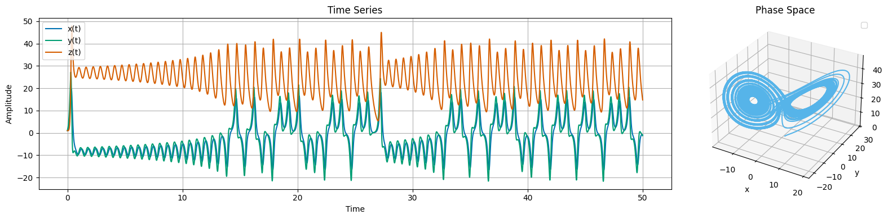
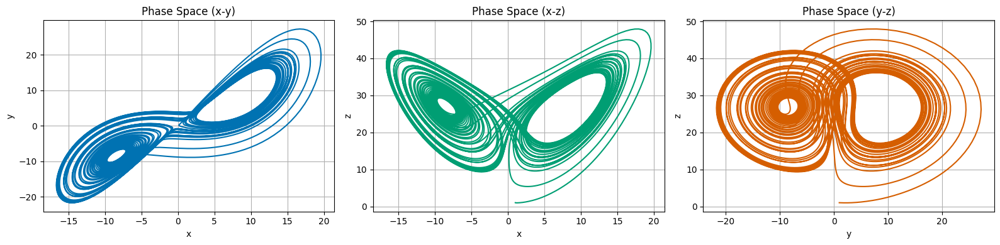
# Bundle of trajectories
def lorenz(t, y, sigma, beta, rho):
x, y, z = y
dxdt = sigma * (y - x)
dydt = x * (rho - z) - y
dzdt = x * y - beta * z
return [dxdt, dydt, dzdt]
def solve_lorenz(y0, sigma=10.0, beta=8/3, rho=28.0, t_span=(0, 50), t_eval=np.linspace(0, 50, 10000)):
sol = solve_ivp(lorenz, t_span, y0, args=(sigma, beta, rho), t_eval=t_eval)
x = sol.y[0]
y = sol.y[1]
z = sol.y[2]
return x, y, z, sol.t
# Example usage:
y0 = [1.0, 1.0, 1.0]
x, y, z, t = solve_lorenz(y0)
# pick 1000 random initial conditions near the original one
num_trajectories = 1000
initial_conditions = np.random.normal(loc=y0, scale=0.1, size=(num_trajectories, 3))
trajectories = []
for ic in initial_conditions:
x, y, z, t = solve_lorenz(ic)
# only store the initial and final points of the trajectory
trajectories.append((x[0], y[0], z[0], x[-1], y[-1], z[-1]))
# Plot the initial and final points of all trajectories in the x-z plane
fig = plt.figure(figsize=(8, 8))
plt.plot(x, z, 'C0')
plt.title('Phase Space Projection (x-z)')
plt.scatter([traj[0] for traj in trajectories], [traj[2] for traj in trajectories], color='C1', s=50, label='Start')
plt.scatter([traj[3] for traj in trajectories], [traj[5] for traj in trajectories], color='C2', s=50, label='End')
plt.legend()
plt.title('Initial and Final Points of Trajectories in x-z Plane')
plt.xlabel('x')
plt.ylabel('z')
plt.grid()
plt.show()
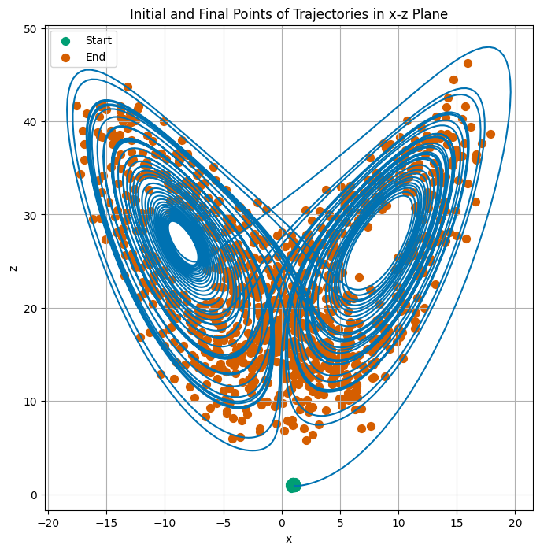